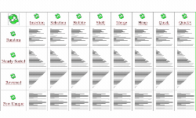
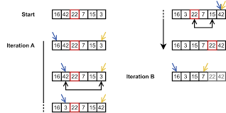

Machine Learning é um ramo da inteligência artificial que se concentra no desenvolvimento de algoritmos e técnicas que permitem aos computadores aprenderem e melhorarem com base em dados. Em vez de serem explicitamente programados para realizar uma tarefa específica, os sistemas de Machine Learning são projetados para aprender com os dados e reconhecer padrões, permitindo que façam previsões ou tomem decisões.
 Um método de ordenação é um algoritmo que organiza os elementos de uma lista em uma ordem específica, como numérica ou alfabética. Existem vários métodos de ordenação, cada um com suas próprias características e eficiência em diferentes cenários. Alguns exemplos de métodos de ordenação incluem o algoritmo de ordenação por bolha, o algoritmo de ordenação rápida e o algoritmo de ordenação por inserção.